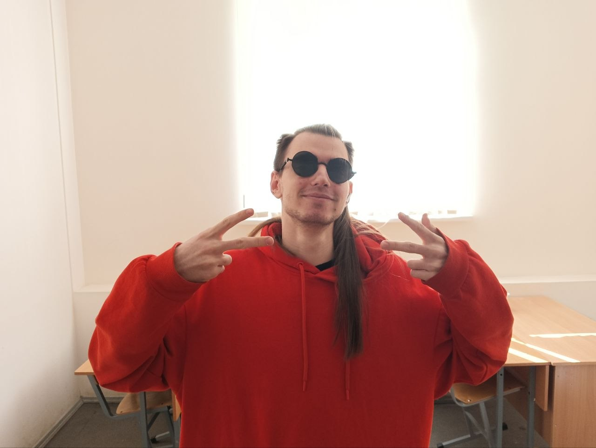

Я программист, которому интереснее всего не просто писать код, а собирать из него работающую систему — игру, приложение или удобный интерфейс.
Начал с простых учебных программ, постепенно перешёл к командным проектам, производственной практике и полноценным приложениям. Сейчас учусь в СПБГУПТД по направлению «ИТ-создание цифрового контента», а параллельно продолжаю прокачивать Unity, C#, архитектуру и Game Design.
В работе ценю системность, понятную структуру и практический результат: люблю разобрать проблему на части, проверить решение и довести его до рабочего состояния.